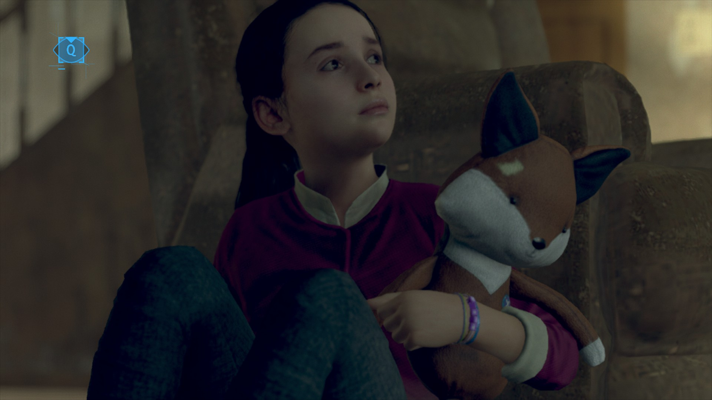

디트로이트 비컴 휴먼 10회차 플레이 후기
날짜: 2025.05.21 - 2025.05.24
더 이상 미룰 수 없다. 마커스 혁명 실패 루트를 시작했다.
그리고 천천히 플레이하며 깨달았는데, 코너 선택지에서 대기하는 모습들이 의외로 잘생긴 씬이 많음.. 움짤 찌는 맛 난다.
앨런 경감과 대화를 하지 않으면 조사도 시작 못 하는구나.
이 사람 앞에서 알짱대면 꼽준다...
구매한 안드로이드 출입불가... 안드로이드는 무조건 사람이 사러 오라는 거겠지?
설거지를 하지 않으면 토드는 의외로(!) 얌전히 술만 마신다. 설거지를 시작하면서 다음 이벤트(맥주 가져와!)가 시작되는 듯

설거지 맨 마지막으로 미루고 틈틈이 쳐다보면 의외로 여기저기 잘 돌아댕기는 앨리스
이거 궁금해서 자세히 봤는데, 안드로이드 출입하면 오너(인간 주인) 고소하겠다는 뜻인듯.
코너가 들어간 거면 사이버라이프를 고소하나요...?

생각해보니 행크 이거 음주운전 아녀,,,,,,,
대답만 잘 하고 지킬 생각은 없는 코너 2종 세트
이때부터 행크 호감도가 제법 올랐을 거라 생각해.
냅킨 상호작용 안 해도 스토리 진행 가능
이거 넘 웃기네 안드로이드가 스스로 판단한 우선순위 과제가 '인간과 화해하기' ㅋㅋㅋ큐ㅠㅠㅠ
심지어 지가 잘못하긴 했어.... 눈치도 볼 줄 아는구나.
저두용...
헐 루시가 흥얼거리는 이 노래가 추후 마커스 시위 루트에서 부르는 그 멜로디다!!!!!!
생각해보니 존 아군으로 삼고 차량 없이 돌아가는 루트는 처음 해본다. 별 이벤트 없이 잘 도망가는구나.
시간 단축상 그냥 이렇게 진행해도 될 듯.
결제할 때 행크 "흠? 흠." 이런다ㅋㅋㅋㅋ 아재요...
ㅋㅋㅋㅋㅋㅋㅋㅋㅋㅋㅋㅋㅋㅋㅋ
앨리스 T인듯
이거 볼 때마다 짠함. 막연한 행복... 루터가 진짜 군데군데에서 많이 죽어서 최종장에서 살기도 어려운 캐릭터란 말이야ㅠㅠㅠ
개인적으로 카라 머리칼은 금발>흑발>백발 순으로 취향이다. 그래서 백발 안 한 지 오래되긴 함.. 11회차는 백발로 해봐야지.

앨리스 보려고 콩콩 거리는 제리들이 귀엽다..
그.. 너무 코앞에서 사기치는데 모르시는거 아임까
이거 각도 돌리면 캄스키 사진이 밖에서 보인다. 귀신 같음....ㅋㅋㅋㅋㅋㅋ
이 안드로이드 모델 너무 눈이 초롱초롱해서 귀엽다ㅋㅋㅋㅋㅋ
고민하다가 마커스 폭동 루트 오랜만에 함 타봤다. 그런데 중앙공원 폭력시위 때도 그렇고, 끝나고 나면 마커스 표정이 혼란스럽고 또 생각도 많아지는 표정이라...
최종 챕터 전까진 평화시위가 맞아 너는ㅠㅠㅠㅠ
아오 나 행크 우호적 부터 도와주는 줄 알았어. 친구 단계만 도와주나봐... 어쩐지 루트 해제 알림이 빨갛게 뜨더라ㅠㅠㅠㅠ
방법이 없는 건 아니기에 문제 없이 플레이 했는데, 얜 도대체 왜 내딥다 퍼킨스 얼굴을 후려갈기고 다시 잡힌 건지 매번 이해는 안 됨...ㅋㅋㅋㅋ
ㅠㅠ.....
안드로이드들이 앨리스를 지키려는 마음은 다 똑같다는게 조금 신기함.
랄프 되게 불안정해서 불안했음. 근처에만 가도 중얼중얼 거리는 게 들림... 그런데 추후 철조망 이벤트에서 도움을 준다..!
랄프는 죽었을까 살았을까...
하 그런데 죽었어....ㅠㅜㅜㅜㅠㅜㅠㅜㅠㅜㅠㅜㅠ
철조망에서 도망간다/앨리스 보호 선택이었는데 보호하다 죽을까봐 빨리 도망가려고 한 건데....
다음엔 앨리스 보호 해봐야지... 그런데 이거 왠지 루터 없으면 무조건 죽는 엔딩일 같기도 해........
드론을 쏘지 않으면 노스가 대화도 못 나누고 죽는다.... 그런데 역시 조쉬 눕혀줄 랑 대우가 너무 다르지 않니.
수천대의 안드로이드를 데리고 왔으나 아무도 없어서 얼렁뚱땅 지도자가 된 코너...ㅎㅋㅋㅋㅋ
고민하다가 아만다의 지배를 받는 배드 엔딩을 결국 탔다.
확실한 장면이 나오진 않았지만 코너 소프트웨어가 안정되고 아만다가 만족스러워한 걸 보니
결국 안드로이드의 혁명은 실패하고 전부 사이버라이프 손에 들어가는 엔딩이 된 듯.